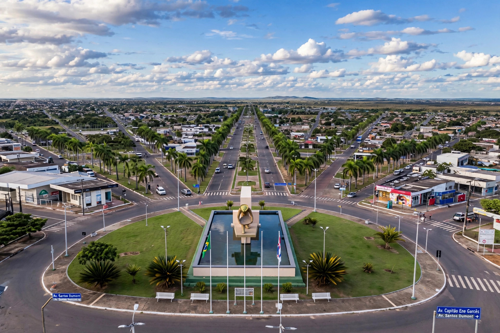

Boa Vista, Roraima
Boa Vista is the capital of the Brazilian state of Roraima, on the Branco River. It is the only Brazilian state capital lying entirely north of the Equator, and its modern centre was laid out in a distinctive radial, fan-shaped plan of avenues converging on the Praça do Centro Cívico.
| Country | Brazil |
|---|---|
| State | Roraima |
| Founded | 9 July 1890 |
| Population | about 420,000 — the majority of Roraima's population |
| Time zone | UTC−4 |

History
Boa Vista originated in the 19th century around cattle ranches on the upper Rio Branco, in a region contested between Brazil, Venezuela and British Guiana. It became capital when the federal territory of Rio Branco (later Roraima) was created in 1943; Roraima became a state in 1988. Since 2015 the city has received large numbers of Venezuelan migrants crossing the nearby border.
Geography and climate
The city sits on the right bank of the Branco River in savanna (lavrado) country. The climate is tropical, hot year-round with a dry season in the northern-hemisphere winter months. Mount Roraima lies far to the north on the triple border.